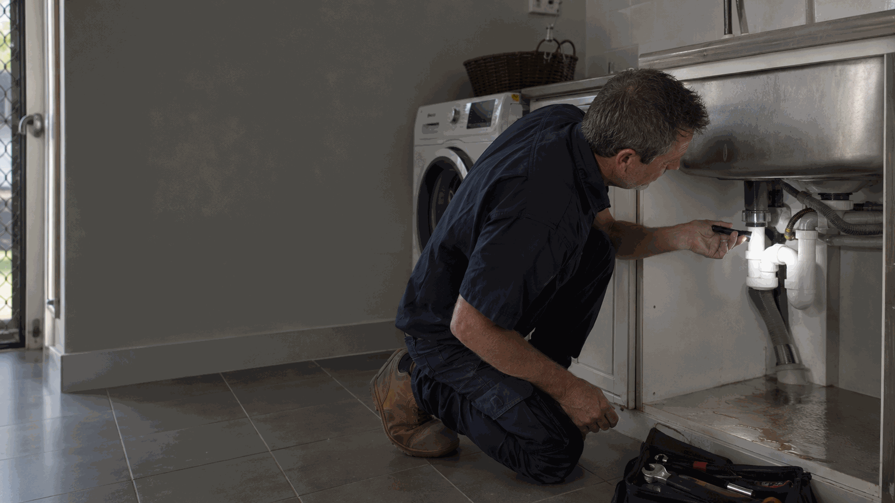

Burst-pipe repair
AUD $275–$990
per repair · incl. GST
Contact Ellis Services Group for burst pipe repairs and active water-leak repairs across Perth. Our licensed plumbing team assesses the damaged pipe or connection, explains the repair and access requirements and confirms a written quote. We work with homeowners, occupants and property managers to organise the affected plumbing work.
Call 0413 477 667 Book burst-pipe repairWhen the damaged pipe or joint is visible, the repair still depends on the pipe material, condition and accessible connections. We assess the affected section rather than assuming a patch or replacement fitting will suit every installation. Let us know where the water is escaping and whether the flow is ongoing.
Concealed damage needs the source and access requirements established before corrective work is agreed. We explain the proposed opening or excavation scope and how it relates to the plumbing repair. If the source is not yet clear, our water leak detection service provides the related investigation pathway.
The plumbing repair and the repair of wet finishes or contents are separate matters. For rental or managed properties, send the approval contact and work-order reference with the location of the affected pipe. This helps us coordinate access without assuming that building repairs or insurance decisions fall within the plumbing scope.

At the property, we establish the affected section, its connections and the access available for repair. The assessment determines whether the agreed work involves a joint, a fitting or replacement of a section of pipe. We explain the proposed materials and any work needed to reach the damaged area before the repair is authorised.
A short exposed repair is different from tracing and reaching a concealed pipe. The written quote separates the agreed plumbing work from extra access, additional pipe replacement and reinstatement. If more extensive deterioration becomes apparent, we explain the finding and any change to the scope rather than proceeding with an unexplained extension of the job.
After completing the authorised work, we check the repaired section and discuss what was done and any further issue observed. We explain any recommended follow-up and confirm the agreed job with you. For other water-supply faults or fixture work, explore our Perth plumbing services and include the additional requirement when requesting a visit.
Our Perth plumbing and electrical work is carried out by appropriately licensed trades. Licence details are available on request.
Safety: Avoid water near electrical equipment, unstable surfaces and any hazardous area. Do not put yourself at risk to investigate the damaged pipe. For immediate danger, Call 000.
Ellis Price Guide
A practical guide for a standard burst-pipe repair at a Perth property.
AUD $275–$990
per repair · incl. GST
Guide conditions: These AUD ranges are for standard-hours, standard-scope work and are incl. GST. Access, materials, extra pipe, cable or circuit work, compliance work, emergency or after-hours work and unforeseen repairs are confirmed in a written quote before work proceeds.
The damaged section, pipe material, location and access affect the repair plan. An exposed connection is a different scope from a pipe behind a wall or below ground. The assessment establishes which section requires repair, what access is needed and what additional work is included before the written quote is agreed.
The final written quote sets out the work included, materials and any agreed additional tasks. We explain changes to the scope before extra work proceeds. Request a burst-pipe repair quote.
No. Describe the observable change and property context. We inspect the affected area on site to establish the cause and confirm the repair scope. If more access is needed, we agree it with you first.
Photos are optional: email safely taken photos to maxinemaintenance.au@outlook.com. You can contact us without photos. Do not approach a hazard, remove covers or dismantle equipment to take a photo.
Put people and electrical safety first. If it is safe and familiar, isolate the water supply; otherwise keep clear and contact us with the details.
Use Water Leak Detection for an unexplained leak or damp area where there is no visible failed pipe. Use this page when water is actively escaping or a pipe or fitting has visibly failed.
No. A description of the location, water flow and affected area is more useful than a guess about the cause.
Yes. Include access, occupant and work-order details in the enquiry.
The written scope states what access and reinstatement work is included. Plumbing repairs do not automatically include replacement finishes or separate building work. We clarify those items before proceeding.
Tell us the suburb, location of the pipe, whether water is actively escaping and any access restrictions. If it is safe, describe whether the damaged section is exposed; do not approach a hazard to find out. Our local team covers all six Perth service regions from our office at 140 St Georges Terrace, Perth WA 6000.
Call to discuss the work or send the property details through our enquiry form. You do not need to diagnose the fault or complete a technical inspection before contacting us.
Call 0413 477 667 Request a visit & written quote